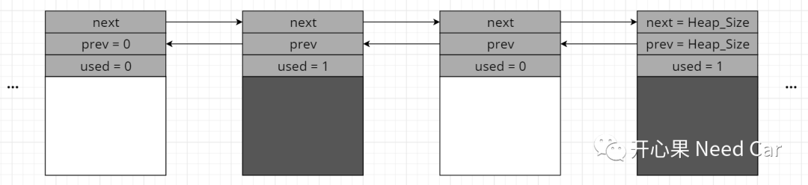
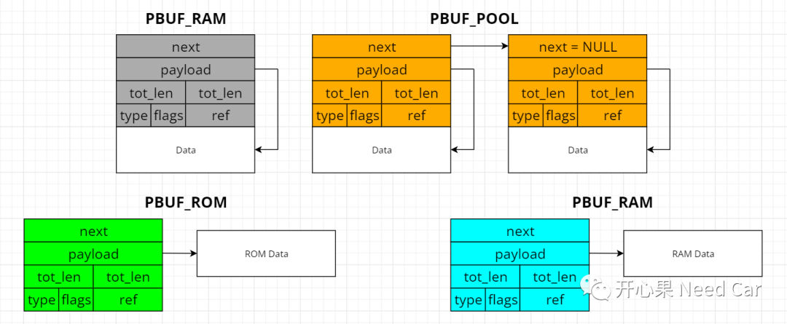
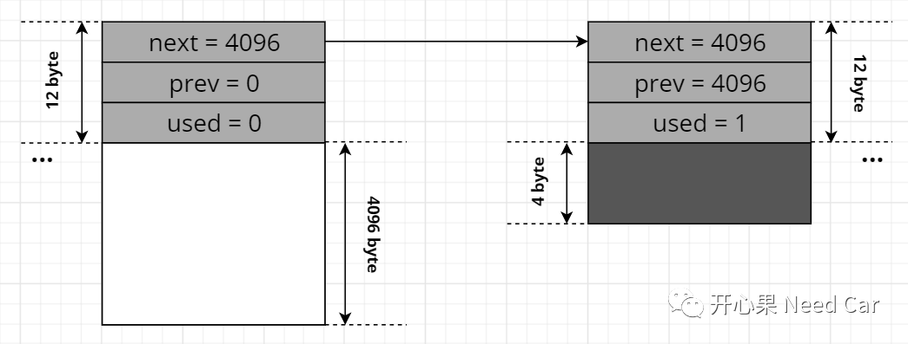
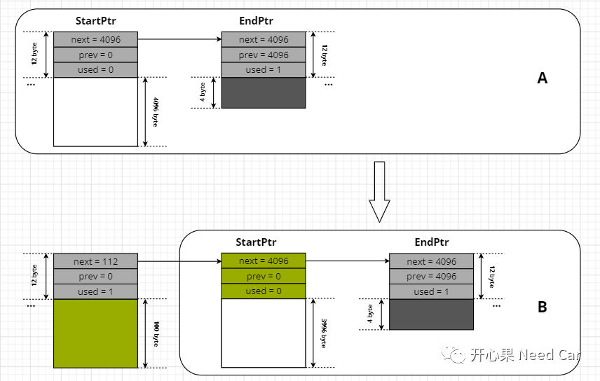

开心果 Need Car · 2022-02-10T20:22:00+08:00 · 微信原文
Lwip的内存管理方式有两种：内存池和内存堆。本文先聊一下Lwip的内存堆（mem）。前面我们聊过ip层（网络层）传输的是Packet，可以回顾英飞凌tc397：基于Lwip以太网数据接收，小白级讲解，而每次Packet传输数据的多少是不确定的，这是因为上层模块一次发送的数据量是不确定的，因此给ip层分配合适的内存缓存上层数据是有必要的。
内存堆管理
对于Lwip来说，在分配堆空间时不要与用户堆混在一起，独立分配一个堆空间给Lwip使用，简言之：低耦合。实际上，就是分配一个全局数组，这个数组空间的大小需要开发人员预估。
对于堆的使用，我们清楚：分配某个指定大小空间时需要不断地查找未使用空间，如果能找到合适空间则将此空间开辟出来，否则空间分配失败。堆的使用可以让我们在整个堆空间任意切割空间大小，但是随着空间的不断被分配，可能会让整个堆空间变得零零碎碎。
使用内存堆分配内存空间时需要考虑时延问题，因为分配内存时需要通过链表查找合适空间位置，这势必消耗一定时间，堆空间的释放也需要消耗时间。
内存堆结构（mem）的链表形式如下所示:

对应Lwip mem.c文件声明的内存堆结构如下所示：
struct mem {/** index (-> ram[next]) of the next struct */mem_size_t next;/** index (-> ram[prev]) of the previous struct */mem_size_t prev;/** 1: this area is used; 0: this area is unused */u8_t used;};
Packet管理
Lwip中将Packet包（Packet Buffer，pbuf）分为4种，参考pbuf.h文件，4种pbuf如下所示：
typedef enum {PBUF_RAM, /* pbuf data is stored in RAM */PBUF_ROM, /* pbuf data is stored in ROM */PBUF_REF, /* pbuf comes from the pbuf pool */PBUF_POOL /* pbuf payload refers to RAM */} pbuf_type;
四种Packet包具体数据引用如下所示，Packet以4 byte对齐。实际要发送的数据存储在ROM或者RAM都是有可能的，因此会将payload声明为一个空指针（void*）。

struct pbuf {/** next pbuf in singly linked pbuf chain */struct pbuf *next;/** pointer to the actual data in the buffer */void *payload;/*** total length of this buffer and all next buffers in chain* belonging to the same packet.** For non-queue packet chains this is the invariant:* p->tot_len == p->len + (p->next? p->next->tot_len: 0)*/u16_t tot_len;/** length of this buffer */u16_t len;/** pbuf_type as u8_t instead of enum to save space */u8_t type;/** misc flags */u8_t flags;/*** the reference count always equals the number of pointers* that refer to this pbuf. This can be pointers from an application,* the stack itself, or pbuf->next pointers from a chain.*/u16_t ref;};
内存堆的初始化
刚才提到，Lwip中会预先开辟一个堆空间，而这个空间的大小由开发人员预估，这里假设我们开辟4K空间（4*1024 byte）。在Lwip mem.c文件中定义全局数组ram_heap，空间大小是4*1024 + 2*12 + 4。这里为什么需要多开辟28 byte空间呢？
/** the heap. we need one struct mem at the end and some room for alignment */u8_t ram_heap[MEM_SIZE_ALIGNED + (2*SIZEOF_STRUCT_MEM) + MEM_ALIGNMENT];

内存堆分配过程分析

往期精彩回顾